Registrazione e analisi di segnali · PLC S7 Signal recording and analysis · S7 PLCs
Registra e analizza i segnali dei PLC S7.
Record and analyse signals from S7 PLCs.
PlcTraceViewer si collega alla CPU con la linea in produzione, legge i segnali che scegli e li salva su disco con l'ora esatta di ogni lettura. L'acquisizione gira in un processo separato dall'interfaccia, quindi l'uso della finestra non influisce sui tempi di campionamento.
PlcTraceViewer connects to the CPU while the line is in production, reads the signals you select and saves them to disk with the exact time of each read. Acquisition runs in a process separate from the user interface, so using the window does not affect sampling times.
Windows 10 e 11 a 64 bit · nessun runtime da installare · funziona senza internet
Windows 10 and 11, 64-bit · no runtime to install · works without internet
Immagine dimostrativa, non dati di un impianto reale. Illustration, not data from a real plant.
A cosa serveWhat it is for
Per capire un fermo servono i segnali dei secondi precedenti.
To understand a stop you need the signals from the seconds before it.
Servono i valori di quei secondi, ognuno con il suo tempo. Gli strumenti che di solito si hanno a disposizione non bastano.
You need the values of those seconds, each with its own time. The tools usually at hand are not enough.
Il trace della CPU è limitato
The CPU trace is limited
Buffer piccolo, pochi segnali e si ferma quando è pieno. Un guasto che si presenta di rado può non essere catturato.
A small buffer, few signals, and it stops when it is full. A fault that appears rarely may never be captured.
L'HMI mostra il presente
The HMI shows the present
Serve per condurre l'impianto, non per ricostruire un evento di 40 ms avvenuto ore prima.
It is made for running the plant, not for reconstructing a 40 ms event that happened hours ago.
Un export senza tempi non basta
An export without timestamps is not enough
Senza l'istante di ogni lettura non si può misurare un ritardo né confrontare due segnali.
Without the time of each read you cannot measure a delay or compare two signals.
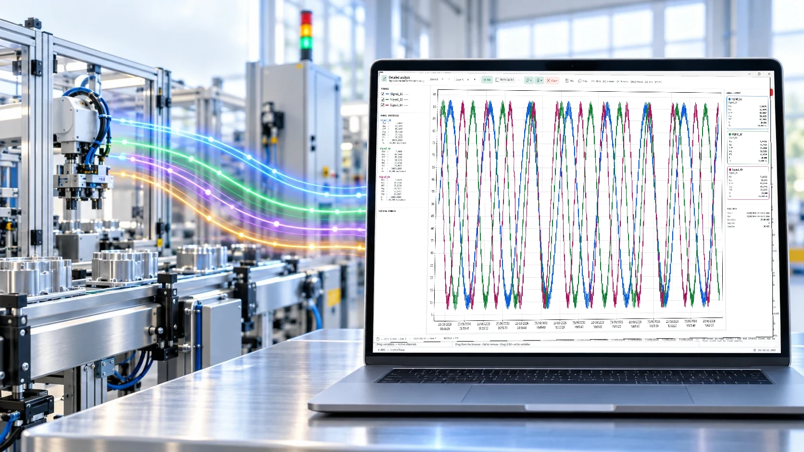
Acquisizione liveLive acquisition I valori passano dal PLC al grafico durante l'acquisizione.Values go from the PLC to the chart during acquisition.
In tre passiIn three steps
Ti colleghi, scegli i canali e registri.
Connect, choose the channels and record.
Non serve preparare un progetto né caricare blocchi nella CPU: si può registrare pochi minuti dopo l'installazione.
There is no project to prepare and nothing to load into the CPU: you can record a few minutes after installing.
Indirizzo e tipo di collegamento
Address and connection type
Inserisci l'indirizzo IP della CPU e scegli il tipo di collegamento. Il test di connessione indica se un problema dipende dalla rete o dalla CPU.
Enter the CPU's IP address and choose the connection type. The connection test tells you whether a problem lies in the network or in the CPU.
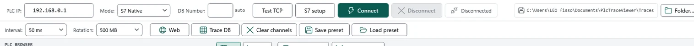
I segnali con i nomi di TIA
Signals with their TIA names
I blocchi si leggono dal progetto TIA, da una tabella dei tag o direttamente dalla CPU. I segnali si aggiungono trascinandoli nell'elenco.
Blocks are read from the TIA project, from a tag table or directly from the CPU. You add signals by dragging them into the list.
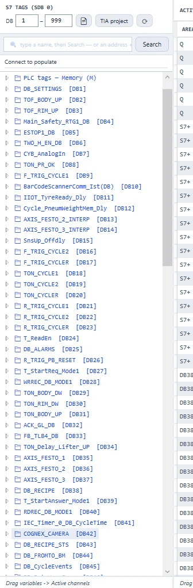
Registrazione
Recording
Prima di aprire il file, il programma verifica che la CPU riesca a rispondere all'intervallo richiesto. Se non ci riesce, lo segnala e propone un intervallo più lungo.
Before opening the file, the program checks that the CPU can answer at the requested interval. If it cannot, it says so and suggests a longer interval.
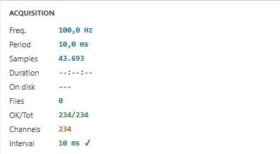
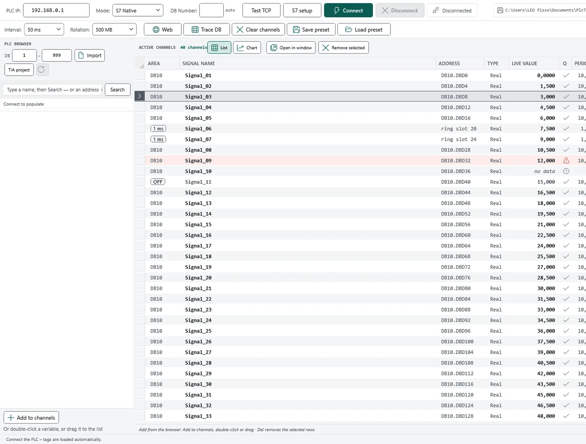
Dal PLC al fileFrom the PLC to the file Lettura, registrazione e analisi dello stesso segnale.Reading, recording and analysis of the same signal.
L'interfacciaThe interface
Valori, grafici e analisi nella stessa finestra, anche durante la registrazione.
Values, charts and analysis in the same window, also while recording.
Valore e periodo di lettura
Value and read period
Per ogni canale sono indicati il periodo con cui viene effettivamente letto e la frequenza corrispondente, misurati durante l'acquisizione.
Each channel shows the period at which it is actually read and the matching rate, both measured during acquisition.
Grafici in tempo reale
Live charts
Decine di segnali sullo stesso asse dei tempi, aggiornati mentre il file viene scritto.
Dozens of signals on one time axis, updated while the file is being written.
Ingressi, uscite e merker, oltre ai DB
Inputs, outputs and memory bits, as well as DBs
Un finecorsa e una pressione analogica si possono confrontare sullo stesso grafico.
A limit switch and an analogue pressure can be compared on the same chart.
Analisi durante l'acquisizione
Analysis during acquisition
La finestra di analisi usata per le registrazioni salvate si apre anche sui segnali in acquisizione.
The analysis window used for saved recordings also opens on signals being acquired.
Misure con i marker
Measuring with markers
Con due marker verticali si leggono ΔT, frequenza e variazione di ogni segnale nell'intervallo. La tabella si può copiare.
Two vertical markers give ΔT, frequency and the change of every signal over the interval. The table can be copied.

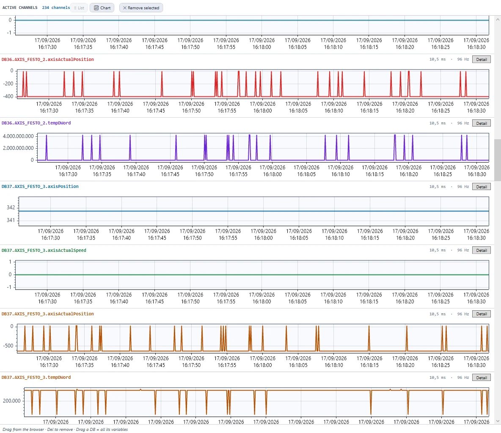
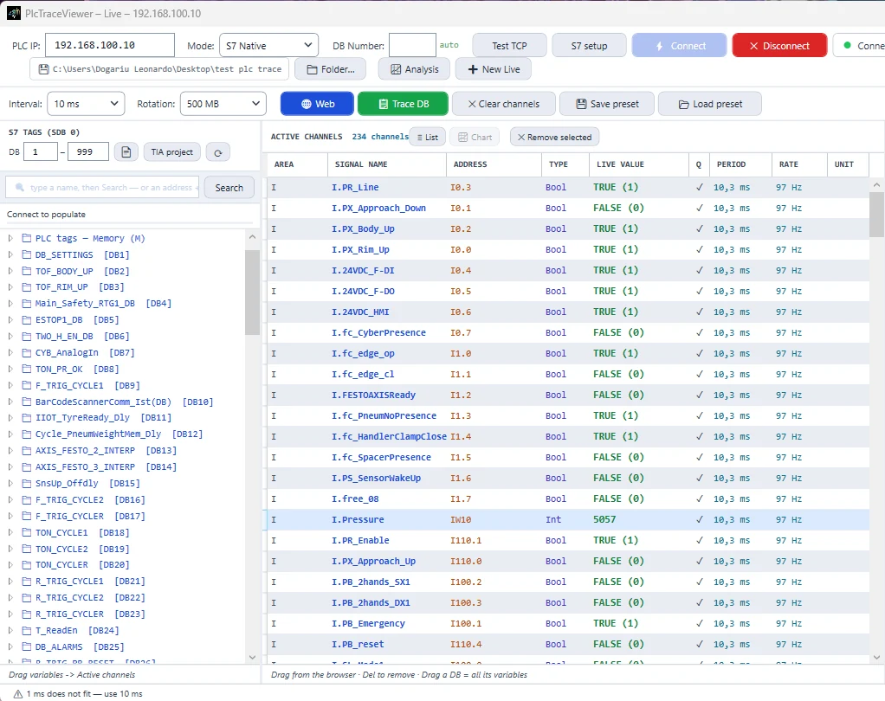
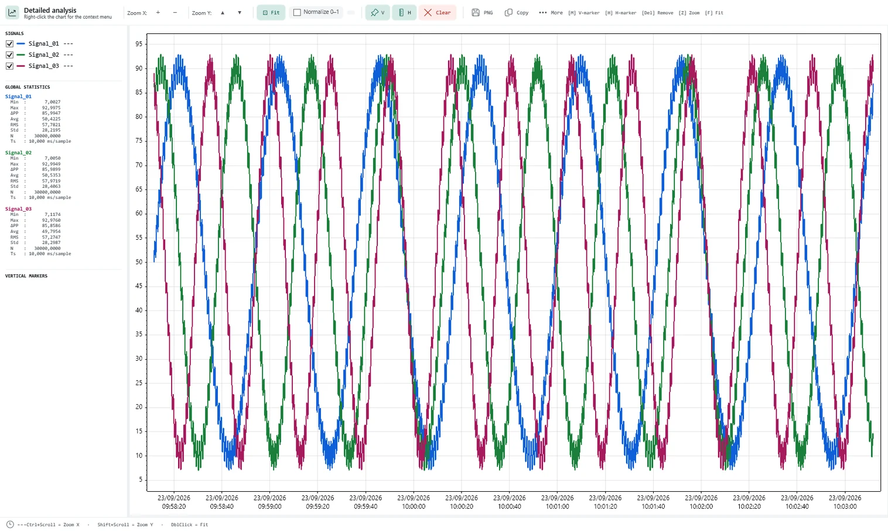
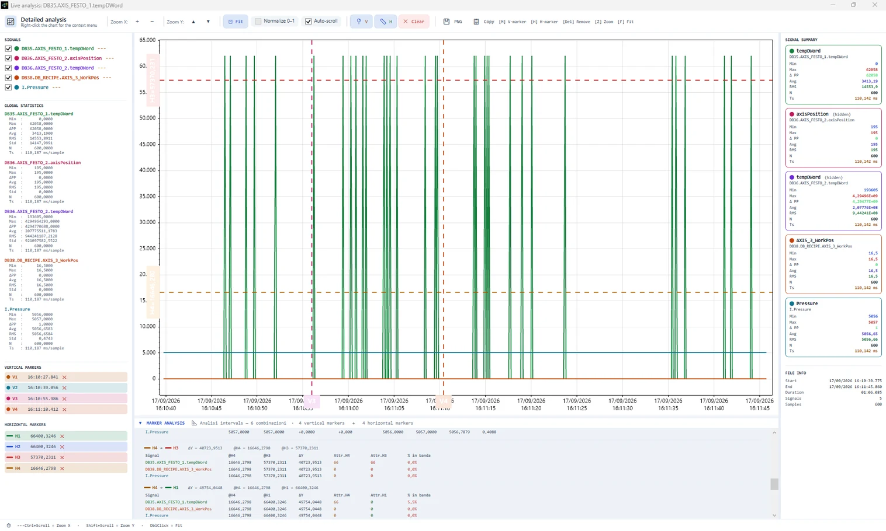
VelocitàSpeed
Acquisizione separata dall'interfaccia.
Acquisition kept separate from the user interface.
Quando l'acquisizione gira nello stesso processo della finestra, basta scorrere un elenco o ridisegnare un grafico perché una lettura parta in ritardo. In PlcTraceViewer l'acquisizione gira in un processo separato ad alta priorità che non disegna nulla: legge il PLC e assegna a ogni campione l'istante in cui è arrivata la risposta.
When acquisition runs in the same process as the window, scrolling a list or redrawing a chart is enough to delay a read. In PlcTraceViewer acquisition runs in a separate high-priority process that draws nothing: it reads the PLC and gives each sample the time at which the answer arrived.
Prova di laboratorio: 100 canali a 1 ms su CPU simulate, con la finestra volutamente sotto carico. Lab test: 100 channels at 1 ms on simulated CPUs, with the window deliberately under load.
La registrazioneThe recording
Cosa garantisce la registrazione.
What the recording guarantees.
Spesso una registrazione inutilizzabile si scopre solo quando l'impianto è già ripartito. Per questo il programma controlla il file mentre lo scrive.
An unusable recording is often discovered only after the plant has restarted. That is why the program checks the file while writing it.
Tempi reali
Real timestamps
Ogni campione riporta l'istante in cui è stato letto, preso dal processo di acquisizione e non dall'interfaccia.
Each sample carries the time it was read, taken by the acquisition process and not by the user interface.
Nessun valore inventato
No invented values
Un valore non letto resta un valore mancante e compare come tale nell'analisi. Non viene sostituito con zero, che sembrerebbe una misura vera.
A value that was not read stays missing and appears as such in the analysis. It is not replaced with zero, which would look like a real measurement.
Verifica prima di registrare
Checked before recording
L'intervallo richiesto viene provato sulla CPU prima di aprire il primo file. Se non è raggiungibile, il programma propone quello che la CPU riesce a mantenere.
The requested interval is tested on the CPU before the first file is opened. If it cannot be reached, the program suggests the one the CPU can sustain.
Scrittura controllata
Monitored writing
La scrittura su disco è controllata per tutta la durata della registrazione e lo spazio su disco è gestito automaticamente. Se la scrittura si interrompe, il programma lo segnala subito.
Writing to disk is monitored for the whole recording and disk space is managed automatically. If writing stops, the program reports it immediately.
Estratto del registro dell'applicazione (tradotto per il sito). An extract of the application log (translated for the site).
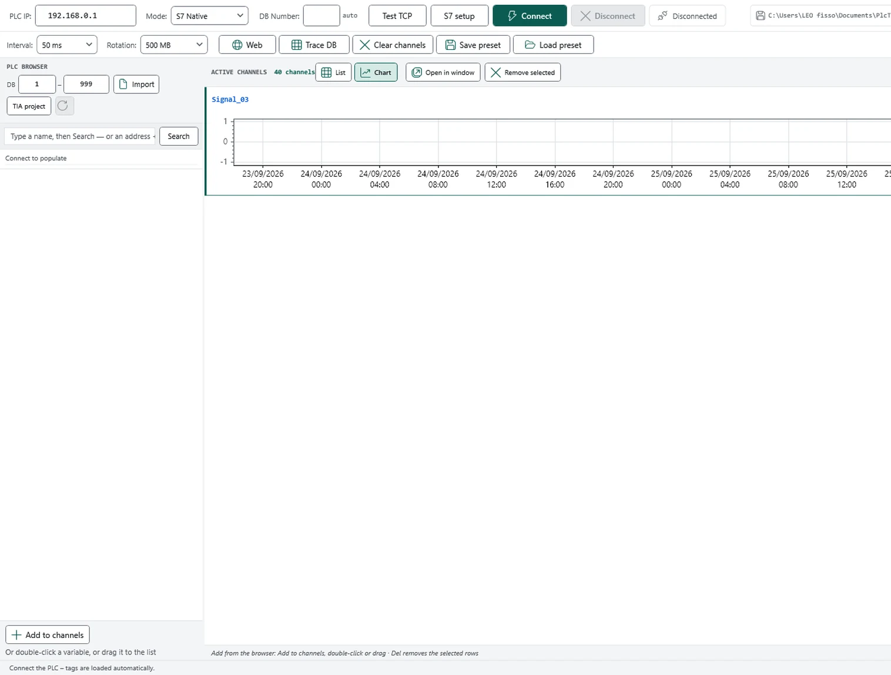
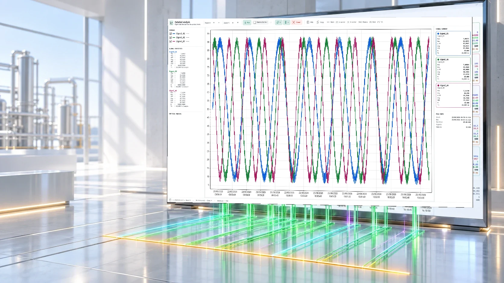
AnalisiAnalysis Analisi dei dati durante l'acquisizione.Analysing the data during acquisition.
AnalisiAnalysis
Stessi strumenti per i file registrati e per i dati in acquisizione.
The same tools for recorded files and for live data.
La finestra di analisi si apre sia su una registrazione sia su un segnale in acquisizione. Gli altri canali si aggiungono trascinandoli e vengono sovrapposti sullo stesso grafico.
The analysis window opens both on a recording and on a signal being acquired. Other channels are added by dragging them in and are overlaid on the same chart.
Marker e misure
Markers and measurements
Marker verticali e orizzontali con differenza di tempo, differenza di valore e frequenza corrispondente. La tabella dei confronti si può copiare in un rapporto.
Vertical and horizontal markers with time difference, value difference and the matching frequency. The comparison table can be copied into a report.
Statistiche
Statistics
Minimo, massimo, picco-picco, media, RMS e deviazione standard, sul tratto selezionato e sull'intero segnale, con il numero di campioni e il periodo reale.
Minimum, maximum, peak-to-peak, mean, RMS and standard deviation, over the selected span and over the whole signal, with the number of samples and the real period.
Finestre di analisi separate PRO
Separate analysis windows PRO
Ogni analisi si apre in una finestra indipendente, ad esempio una per monitor, con zoom diversi sullo stesso istante.
Each analysis opens in its own window, for example one per monitor, with different zoom levels on the same instant.
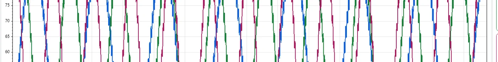
Segnali calcolati · PROComputed signals · PRO
Canali calcolati con formule.
Channels computed from formulas.
Derivate, integrali, filtri in Hz, statistiche su finestra mobile, fronti, temporizzazioni e analisi in frequenza. Le funzioni si possono combinare e applicare anche ad altri canali calcolati; l'editor mostra l'anteprima della curva mentre si scrive.
Derivatives, integrals, filters in Hz, moving-window statistics, edges, timers and frequency analysis. Functions can be combined and applied to other computed channels too; the editor previews the curve as you type.
Le 94 funzioni disponibili The 94 available functions
L'elenco è generato dal codice dell'applicazione e corrisponde alle funzioni accettate dall'editor. The list is generated from the application's code and matches the functions the editor accepts.
CollegamentoConnection Dal PLC ai segnali con il loro nome.From the PLC to named signals.
CollegamentoConnection
Tre modi di collegarsi alla CPU.
Three ways to connect to the CPU.
Si sceglie in base alla CPU e ai blocchi da leggere. Per ogni valore il programma indica da quale collegamento arriva.
Choose according to the CPU and the blocks to read. For each value the program shows which connection it came from.
| Collegamento | CPU | Indirizzamento | Blocchi ottimizzati | Requisito sulla CPU |
|---|---|---|---|---|
| Connection | CPU | Addressing | Optimised blocks | Required on the CPU |
| PUT/GET | S7-300 / 400 / 1200 / 1500 | assoluto | non leggibili | accesso PUT/GET consentito |
| PUT/GET | S7-300 / 400 / 1200 / 1500 | absolute | not readable | PUT/GET access allowed |
| OPC UA | S7-1200 / 1500 | simbolico | leggibili | server OPC UA attivo e con licenza |
| OPC UA | S7-1200 / 1500 | symbolic | readable | OPC UA server enabled and licensed |
| S7comm-Plus | S7-1500 ≥ V2.9 S7-1200 ≥ V4.3 | simbolico | leggibili | comunicazione PG/PC e HMI sicura |
| S7comm-Plus | S7-1500 ≥ V2.9 S7-1200 ≥ V4.3 | symbolic | readable | secure PG/PC and HMI communication |
Nomi dei segnali
Signal names
I segnali mantengono i nomi del progetto TIA. I nomi si possono prendere dal progetto (.ap16 → .ap21), dalle sorgenti dei blocchi (.db, .scl, .udt), da una tabella dei tag (.xlsx, .csv) oppure leggere direttamente dalla CPU, anche senza il progetto.
Signals keep the names from the TIA project. Names can come from the project (.ap16 → .ap21), from block sources (.db, .scl, .udt), from a tag table (.xlsx, .csv), or be read directly from the CPU, even without the project.
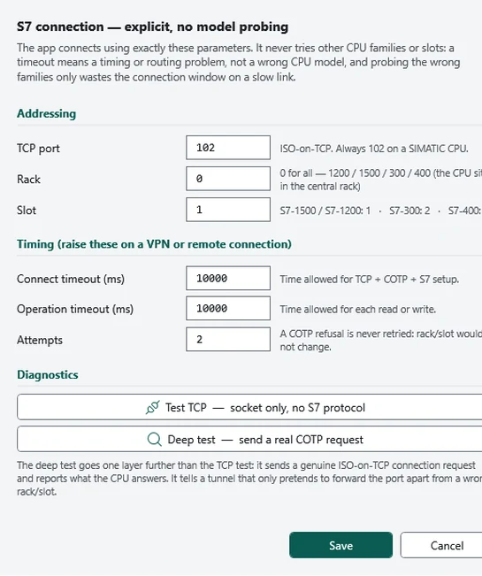
Quando la rete non bastaWhen the network is not enough
Campionamento a 1 ms dentro la CPU.
1 ms sampling inside the CPU.
Se l'intervallo necessario non è raggiungibile in rete, il programma genera i blocchi da importare in TIA: il PLC campiona al ritmo del proprio OB e l'applicazione legge i dati a blocchi. Il periodo dei campioni non dipende più dal traffico di rete.
If the interval you need cannot be reached over the network, the program generates blocks to import into TIA: the PLC samples at the rate of its own OB and the application reads the data in batches. The sample period no longer depends on network traffic.
Si sceglie quanti segnali per tipo e la profondità del buffer; la memoria occupata nel PLC viene indicata prima della generazione. I blocchi sono nuovi e quelli esistenti non vengono modificati.
You choose how many signals of each type and the buffer depth; the memory used in the PLC is shown before generating. The blocks are new and existing ones are not modified.
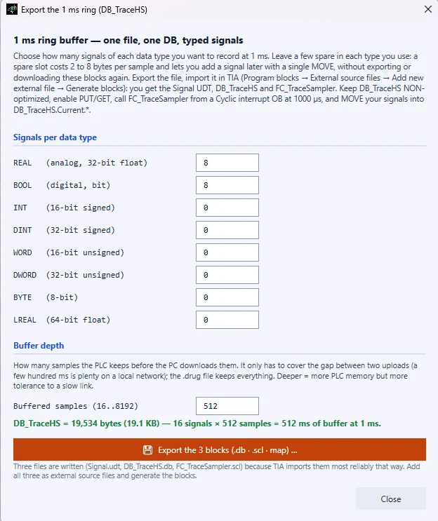
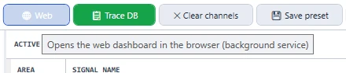
Dashboard web · PROWeb dashboard · PRO
Valori e registrazione dal browser.
Values and recording from a browser.
Un servizio di Windows pubblica una pagina accessibile da qualsiasi PC della rete di impianto: valori in tempo reale, andamento recente, stato del disco, avvio e arresto della registrazione.
A Windows service publishes a page that any PC on the plant network can open: live values, recent trend, disk status, start and stop of the recording.
La registrazione avviata dalla pagina è la stessa dell'applicazione, non una copia separata: un solo registratore e un solo file.
The recording started from the page is the application's own, not a separate copy: one recorder and one file.
LimitiLimitations
Cosa non fa
What it does not do
Meglio saperlo prima di portarlo in impianto.
Worth knowing before you take it to a plant.
- Non scrive nel PLC. Legge soltanto: non forza variabili, non modifica il programma e non cambia lo stato della CPU.
- Non garantisce un intervallo fisso. L'intervallo raggiungibile dipende da CPU, canali e rete: viene misurato in impianto e indicato.
- Non legge i blocchi ottimizzati tramite indirizzo. Questi blocchi non hanno indirizzi assoluti; servono OPC UA o S7comm-Plus.
- Non è un ambiente di programmazione. Non modifica né compila progetti PLC e non fa diagnostica hardware.
- Non è un sistema di archiviazione storica. È uno strumento per la messa in servizio e la ricerca guasti, non un archivio permanente dei dati di processo.
- Senza licenza non registra. La versione Free apre e analizza le registrazioni; collegamento al PLC, registrazione ed esportazioni richiedono la licenza PRO.
- Non richiede internet. Né per l'uso né per attivare la licenza. Se una connessione è disponibile, il programma verifica lo stato della licenza sul portale senza inviare dati d'impianto.
- It does not write to the PLC. It only reads: it does not force variables, change the program or change the CPU state.
- It does not guarantee a fixed interval. The interval that can be reached depends on the CPU, the channels and the network: it is measured on site and shown.
- It does not read optimised blocks by address. These blocks have no absolute addresses; OPC UA or S7comm-Plus is needed.
- It is not a programming environment. It does not edit or compile PLC projects and does no hardware diagnostics.
- It is not a historian. It is a tool for commissioning and fault finding, not a permanent archive of process data.
- It does not record without a licence. The Free version opens and analyses recordings; connecting to the PLC, recording and exporting need a PRO licence.
- It does not need internet. Neither for use nor for activating the licence. If a connection is available, the program checks the licence status on the portal without sending plant data.
EdizioniEditions
Free e PRO
Free and PRO
La versione Free apre e analizza le registrazioni. Collegamento al PLC, registrazione ed esportazioni sono funzioni PRO, che si attivano con un file di licenza (.ptvlic) legato al PC. L'attivazione non richiede internet; se una connessione è disponibile, lo stato della licenza viene verificato sul portale senza inviare dati d'impianto.
The Free version opens and analyses recordings. Connecting to the PLC, recording and exporting are PRO features, enabled by a licence file (.ptvlic) bound to the PC. Activation does not need internet; if a connection is available, the licence status is checked on the portal without sending plant data.
Analisi delle registrazioni
Analysing recordings
Pronta all'uso, senza attivazione e senza scadenza.
Ready to use, without activation or expiry.
- Apre .drug, .drug.gz, .csv, .txt, un file alla volta
- Grafici con più segnali sullo stesso asse dei tempi, zoom e spostamento
- Marker verticali e orizzontali, ΔT, Δvalore e frequenza
- Statistiche sul tratto selezionato e sull'intero segnale
- Nessuna attivazione, nessuna scadenza, nessun account
- Opens .drug, .drug.gz, .csv, .txt, one file at a time
- Charts with several signals on one time axis, zoom and pan
- Vertical and horizontal markers, ΔT, Δvalue and frequency
- Statistics over the selected span and over the whole signal
- No activation, no expiry, no account
Acquisizione, registrazione, esportazione
Acquisition, recording, export
Tutte le funzioni che leggono dal PLC o esportano dati.
All functions that read from the PLC or export data.
- Acquisizione e registrazione: S7-300, 400, 1200 e 1500
- Generazione dei blocchi per il campionamento a 1 ms nel PLC
- Dashboard web sulla rete di impianto
- Editor delle espressioni con le 94 funzioni per i segnali calcolati
- Più registrazioni aperte insieme, con l'asse dei tempi sincronizzato
- Finestre di analisi separate, ad esempio su due monitor
- Esportazione CSV, immagine ad alta risoluzione e copia negli appunti
- Importazione dei file di ibaAnalyzer
- Acquisition and recording: S7-300, 400, 1200 and 1500
- Generation of the blocks for 1 ms sampling in the PLC
- Web dashboard on the plant network
- Expression editor with the 94 functions for computed signals
- Several recordings open at once, with a synchronised time axis
- Separate analysis windows, for example on two monitors
- CSV export, high-resolution image and copy to clipboard
- Import of ibaAnalyzer files
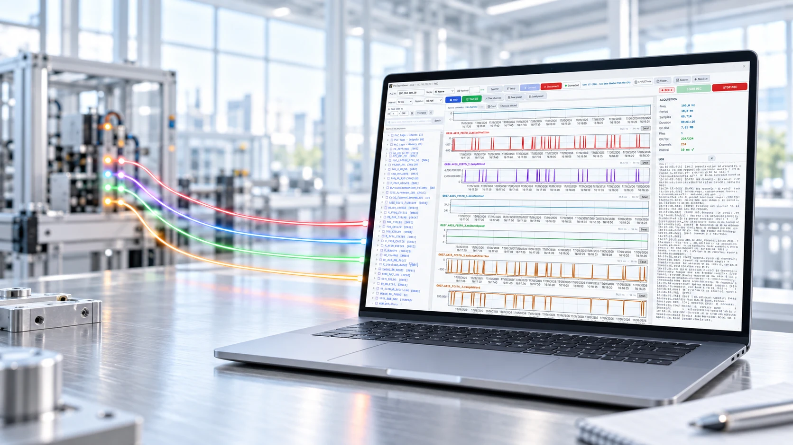
In campoOn site Servono un PC portatile e un cavo di rete.All you need is a laptop and a network cable.
Download
Installazione
Installation
L'installazione contiene tutto il necessario: non serve installare altri componenti né preparare configurazioni. Se è aperta una versione precedente, chiudila prima di installare.
The installer contains everything needed: there are no other components to install and nothing to configure first. If an earlier version is open, close it before installing.
Scarica
Download
Il file si scarica da GitHub. Se Windows SmartScreen mostra un avviso, scegli Ulteriori informazioni → Esegui comunque.
The file is downloaded from GitHub. If Windows SmartScreen shows a warning, choose More info → Run anyway.
Installa
Install
Installazione guidata per il tuo utente Windows. La dashboard web è facoltativa: se la selezioni, Windows chiede l'autorizzazione e poi il servizio si avvia da solo.
Guided installation for your Windows user. The web dashboard is optional: if you select it, Windows asks for permission and the service then starts on its own.
Collega
Connect
Inserisci l'indirizzo della CPU, trascina i canali nell'elenco e avvia REC. Il programma segnala eventuali problemi.
Enter the CPU address, drag the channels into the list and press REC. The program reports any problems.
PlcTraceViewer_Setup_v2.1.2.exe Windows 10 / 11 · 64 bit · porta 102 verso la CPU· port 102 to the CPU · nessun account richiesto· no account required
1. Apri PlcTraceViewer → ? → Activate PRO version e copia il Machine Code.
2. Invia la richiesta dal portale licenze con il codice e i tuoi dati. Ogni richiesta viene verificata personalmente; ne serve una per PC.
3. Quando la richiesta è approvata, scarica il file .ptvlic dal portale (Request status) e importalo nell'app con Import licence file.
1. Open PlcTraceViewer → ? → Activate PRO version and copy the Machine Code.
2. Send the request from the licence portal with the code and your details. Every request is checked personally; one per PC is needed.
3. When the request is approved, download the .ptvlic file from the portal (Request status) and import it in the app with Import licence file.
forgepi.tail50ae29.ts.net:8443
FAQ
Domande frequenti
Frequently asked questions
Interferisce con il PLC in produzione?Does it interfere with a PLC in production?
Arriva a 1 ms?Can it reach 1 ms?
Funziona con i blocchi ad accesso ottimizzato?Does it work with optimised-access blocks?
Serve il progetto TIA?Do I need the TIA project?
Cosa posso fare senza licenza?What can I do without a licence?
Serve internet?Does it need internet?
Che file produce e come si leggono?What files does it produce and how are they read?
Posso lasciarlo registrare tutta la notte?Can I leave it recording all night?
Su che PC lo installo?What PC do I install it on?
Tutte le domande su licenze e procedure →All questions about licences and procedures →